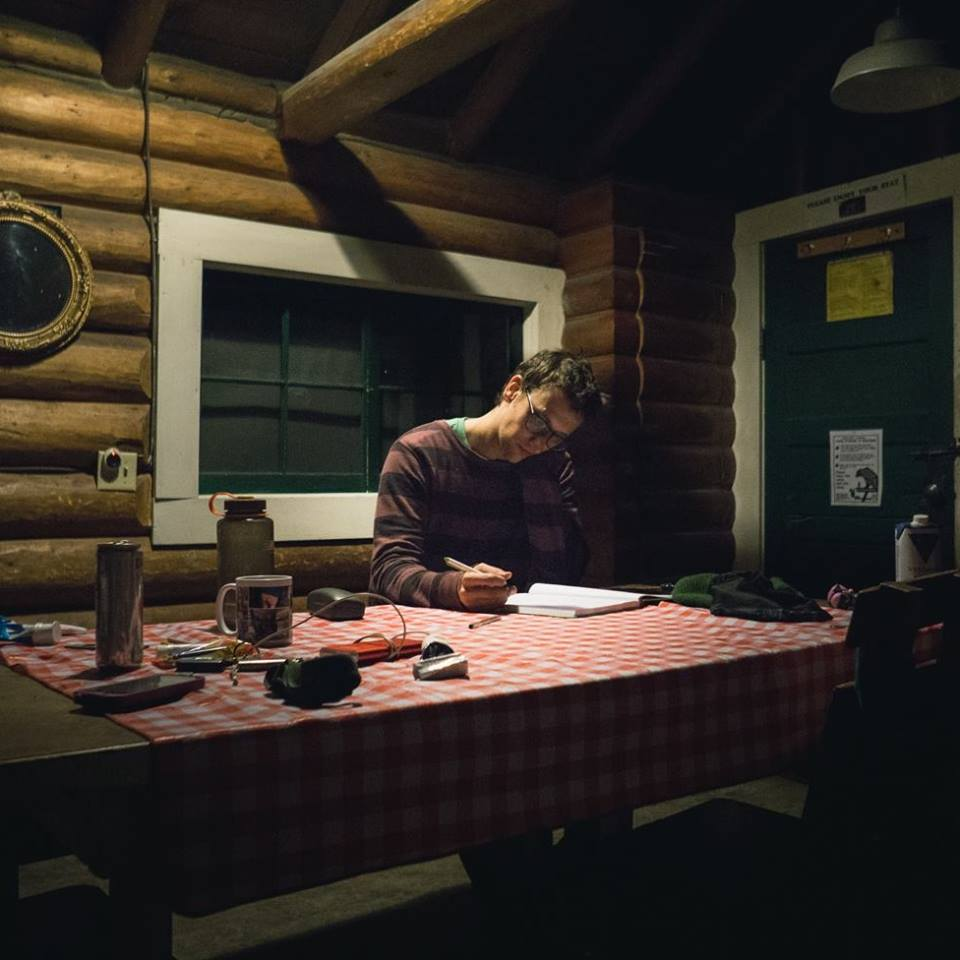

Ben's Code Journal
Home
Languages
Python
Installs
Useful
map()
input()
Sets
P.B. Reference
args, kwargs
zip()
sorted()
Base Modules
Collection
Counter
default_dict()
Pdb
Advanced
Decorators
Classes
Generators
Strings
SQL
Postgres
SQL server
sqlite
mySQL
Front End
HTML
CSS
SASS
Javascript
Sample Layouts
Holy Grail
Bash
Basics
Zip and Unzip
Screen
SSH
Environment Variables
VI
Users
Processes
Docker
Basics
Git
Basics
Internet Of Things
AWS
Azure
General Notes
Algorithms
Python
Wheel
Breadth First Search
Names and Dates
Alphabet Rangoli
Averages
Collections Counter
Default Dict
Door Mat
Find a String
sWAP cASE
Class Quiz
Print Directory
Node w Classes
Crossing Rects
Retry
Stairs
MKDocs
Next
Installs
Welcome to Ben's Code Journal
May it aid you in your coding adventures if a google search lands you here.

aws_code-journal
Next
Installs